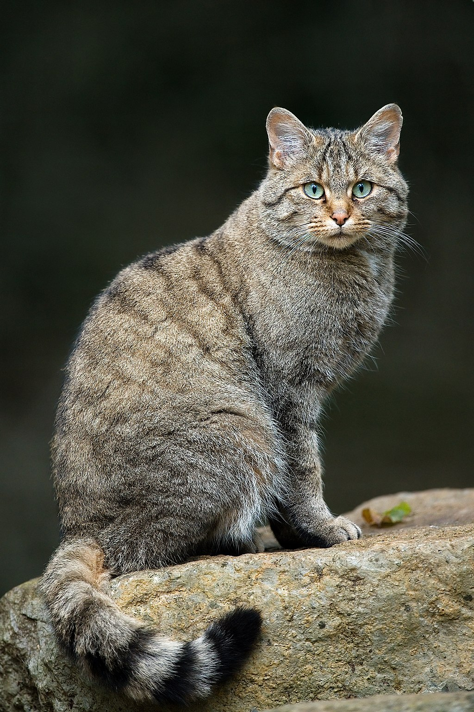
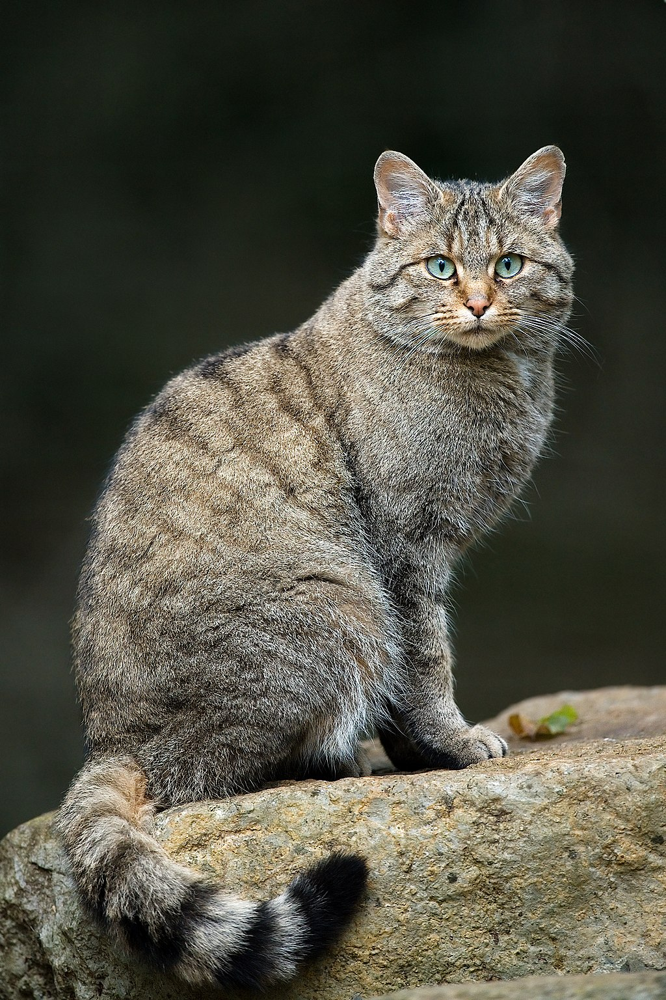
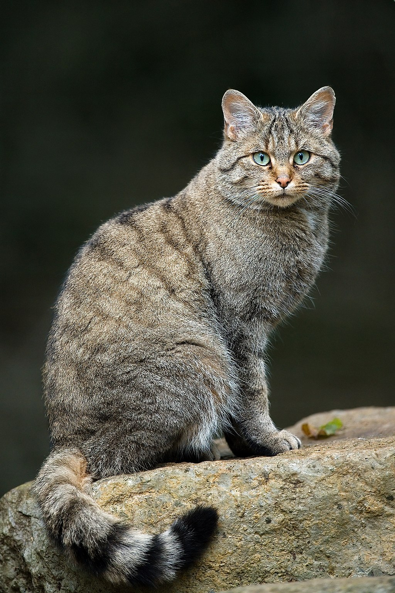

Tabby describes any domestic cat (Felis catus) with a coat pattern distinguished by an M-shaped marking on its forehead, stripes by its eyes, cheeks, along its back, and around its legs and tail. A tabby also has characteristic striped, dotted, lined, flecked, banded, or swirled patterns on the body: neck, shoulders, sides, flanks, chest. The four known distinct tabby patterns are mackerel, classic (or blotched), ticked, and spotted. Each is linked to specific genetics.

| January | February |
|---|---|
| 3 | 6 |